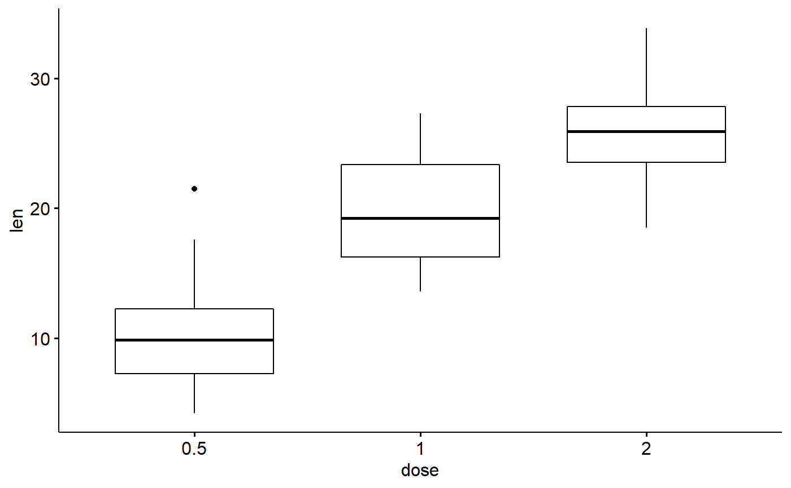
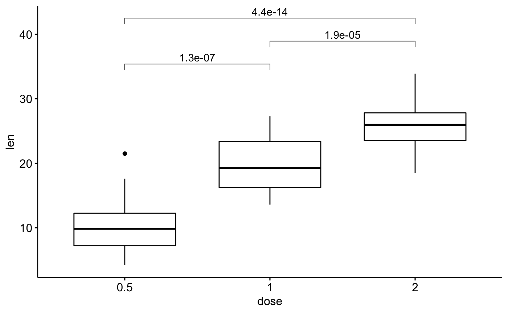
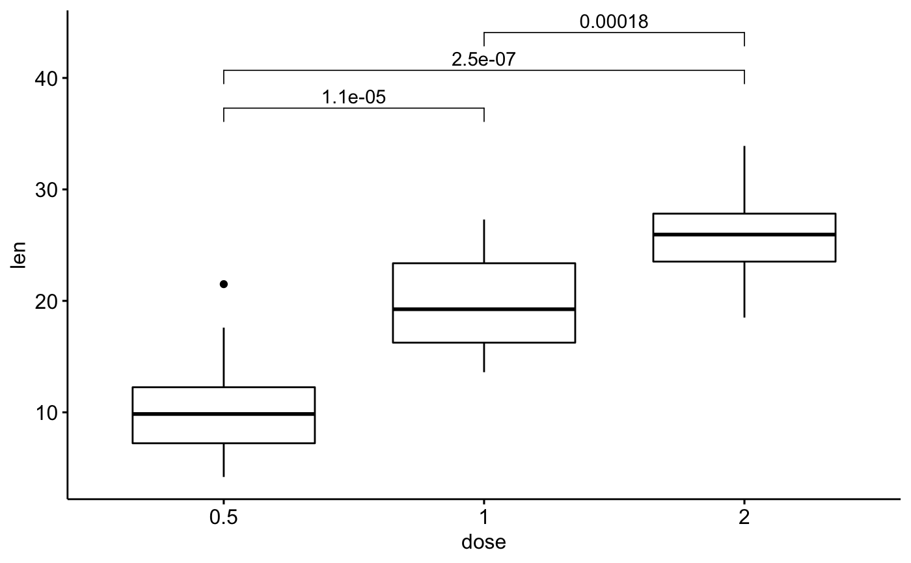
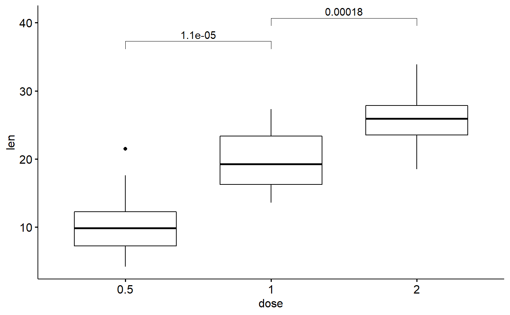

Setting aes(label=..p.adj..) in ggpubr::compare_means() does not
show adjust p values. The returned result of this function can be combined with ggpubr::stat_pvalue_manual() to fix
this problem.
get_adj_p( data, .col, .grp = "Sample", comparisons = NULL, method = "wilcox.test", p.adjust.method = "fdr", p.digits = 3L, ... )
Arguments
| data | a |
|---|---|
| .col | column name for comparison. |
| .grp | column name for groups. |
| comparisons | Default is |
| method | a character string indicating which method to be used for comparing means. It can be 't.test', 'wilcox.test' etc.. |
| p.adjust.method | correction method, default is 'fdr'. Run |
| p.digits | how many significant digits are to be used. |
| ... | other arguments passed to |
Source
https://github.com/kassambara/ggpubr/issues/143
Value
a data.frame containing comparison result
Details
More info see ggpubr::compare_means(), ggpubr::stat_compare_means() and stats::p.adjust().
Examples
library(ggpubr)#>#># T-test stat.test <- compare_means( len ~ dose, data = ToothGrowth, method = "t.test", p.adjust.method = "fdr" ) stat.test#> # A tibble: 3 x 8 #> .y. group1 group2 p p.adj p.format p.signif method #> <chr> <chr> <chr> <dbl> <dbl> <chr> <chr> <chr> #> 1 len 0.5 1 1.27e- 7 1.90e- 7 1.3e-07 **** T-test #> 2 len 0.5 2 4.40e-14 1.30e-13 4.4e-14 **** T-test #> 3 len 1 2 1.91e- 5 1.90e- 5 1.9e-05 **** T-test# Add p values my_comparisons <- list(c("0.5", "1"), c("1", "2"), c("0.5", "2")) p + stat_compare_means(method = "t.test", comparisons = my_comparisons)# Try adding adjust p values # proposed by author of ggpubr # however it does not work p + stat_compare_means(aes(label = ..p.adj..), method = "t.test", comparisons = my_comparisons)#> Warning: Using `as.character()` on a quosure is deprecated as of rlang 0.3.0. #> Please use `as_label()` or `as_name()` instead. #> This warning is displayed once per session.# Solution: # calculate adjust p values and their location # then use stat_pvalue_manual() function p_adj <- get_adj_p(ToothGrowth, .col = "len", .grp = "dose") p_adj#> # A tibble: 3 x 9 #> .y. group1 group2 p p.adj p.format p.signif method y.position #> <chr> <chr> <chr> <dbl> <chr> <chr> <chr> <chr> <dbl> #> 1 len 0.5 1 0.00000702 1.1e-05 7.0e-06 **** Wilcoxon 37.3 #> 2 len 0.5 2 0.0000000841 2.5e-07 8.4e-08 **** Wilcoxon 40.7 #> 3 len 1 2 0.000177 0.00018 0.00018 *** Wilcoxon 44.1# Show selected comparisons # Of note, p value is ajusted # for three comparisons, but only # two are showed in figure p_adj <- get_adj_p(ToothGrowth, .col = "len", .grp = "dose", comparisons = list(c("0.5", "1"), c("1", "2")) ) p + stat_pvalue_manual(p_adj, label = "p.adj")